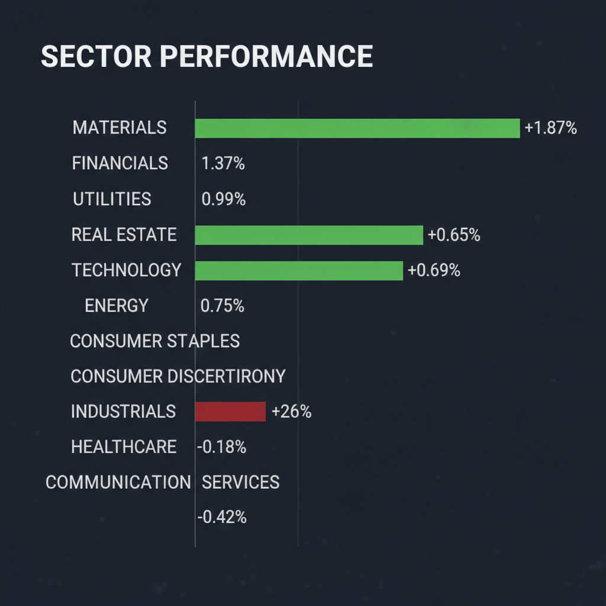
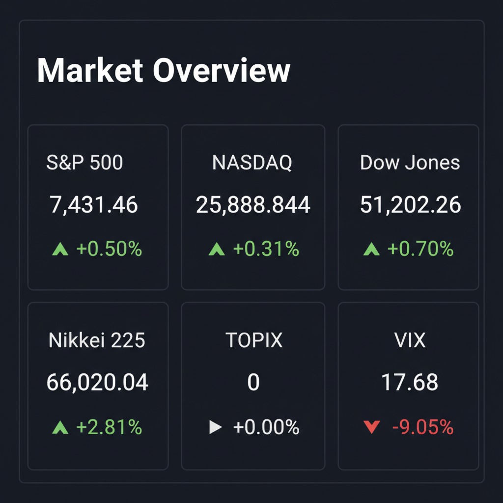

投資チームミーティングの議長として、各専門エージェントの合議内容を統合し、投資家向けの最終レポートを作成いたしました。
各エージェントがWeb調査結果を踏まえて独立に10段階評価した結果です。平均7以上=強気、4〜6.9=中立、4未満=弱気。
| 銘柄 | ファンダメンタルズアナリスト | テンバガーハンター | マクロエコノミスト | テクニカルストラテジスト | リスクマネージャー | 平均 | 判定 |
| 278A | 2 赤字拡大、期待先行の過熱感。売却検討 | 4 赤字拡大、期待先行の過熱感あり | 3 赤字継続、期待先行でリスク高 | 3 赤字拡大、防衛発表控え過熱感強い | 2 赤字継続、期待先行の過熱感、短期イベントリスク大 |
2.8 | 弱気 |
エージェントが推奨した中小型株について、Google検索で最新情報を調査した結果です。
銘柄コード278Aは「Ｔｅｒｒａ Ｄｒｏｎｅ（テラドローン）」です。以下に投資判断に必要な最新情報をまとめます。
1. 企業概要 Ｔｅｒｒａ Ｄｒｏｎｅは、産業用ドローン関連のハードウェア・ソフトウェア開発、ソリューション提供、およびドローンや空飛ぶクルマの運航管理システム（UTM）の開発・提供を行う企業です。主な事業内容は、測量、点検、農業、災害復旧など多岐にわたります。また、国内外に積極的に展開しており、2024年1月期における海外売上高比率は39.2%に達しています。 時価総額は2026年6月12日時点で約789億円〜795億円です。業界におけるポジションとしては、ドローン業界の調査機関「Drone Industry Insights」が発表するドローンサービス企業世界ランキングにおいて、2024年には産業用ドローンサービス企業として世界1位を獲得しています。
2. 直近の業績・決算情報 直近の決算情報は、2026年3月16日に発表された2026年1月期の通期決算です。 * 売上高: 2026年1月期は47億8200万円で、前期比7.8%増と成長を維持しました。 * 利益: 2026年1月期は、将来の成長に向けた先行投資が重なったことにより、営業損失11億4300万円、経常損失12億8400万円、最終損失23億2000万円と赤字幅が拡大しました。 * 成長率: 売上高は成長しているものの、先行投資により赤字が継続・拡大傾向にあります。 * 2027年1月期の通期予想: 売上高は50億7300万円（前期比6.1%増）、最終損益は12億6600万円の赤字と、赤字幅の縮小を見込んでいます。 次の決算発表は2026年6月15日に予定されている第1四半期決算です。
3. 最新ニュース・材料（直近1-2週間） * 2026年6月15日に第1四半期決算発表と同時に「防衛事業戦略発表会」が開催される予定であり、市場の注目を集めています。同社は2026年3月23日に防衛装備品市場への本格参入を決定しており、この発表会で具体的な進捗や今後の事業戦略が示されると期待されています。 * 2026年6月5日には、マレーシアでの国家レベルのUTM案件を受注したことを発表しました。 * 2026年6月8日には出来高変化率ランキングにランクインしたと報じられています。 * 2026年6月12日には、サウジアラビア政府系企業と連携し、大巡礼時に医療物流ドローン運用を行うというニュースがありました。 * NATO日本政府代表部主催の展示イベントに出展したことも報じられています。
4. アナリスト評価・目標株価 現時点での具体的なアナリスト目標株価の記載は限られています。Investing.comではアップサイドが91.3%と記載されていますが、具体的な株価の数値は不明です。赤字企業であるため、PERベースの理論株価は算出できません。PBRベースでの理論株価は現在株価に対して下方乖離があるものの、市場はドローン市場の将来性と世界トップシェアという点を織り込み、プレミアムを付与しているとの見方もあります。
5. リスク要因 * 財務上の懸念: 成長のための先行投資が続き、赤字が継続・拡大している点が最大の懸念です。黒字転換の時期が見通しにくい状況です。 * 競合: ドローン市場は競争が激しく、技術優位性を維持するためには継続的な開発投資が必要です。 * 規制: グローバル展開しているため、各国での法規制の変更や新たな許認可の取得が事業の範囲やコストに影響を与える可能性があります。 * オペレーションリスク: 海外展開に伴う地政学的なリスクや、インドネシア子会社の火災事故のようなオペレーションリスクも存在します。 * 株価の過熱: 株価が短期間で急騰しており、過去のテーマ株と同様に、需給崩壊による急落リスクが指摘されています。また、決算発表後に「材料出尽くし」と受け止められる可能性もあります。
6. 株価の最近の動き Ｔｅｒｒａ Ｄｒｏｎｅの株価は、2024年11月の上場以降、成長期待を背景に高いボラティリティ（価格変動性）を示してきました。2026年3月の防衛市場参入のニュースをきっかけに株価は急騰し、2026年5月には一時10,770円の年初来高値を記録しました。 直近の動きとしては、2026年6月12日の終値は8,100円で、前日比-470円（-5.48%）と下落しており、高値圏でのもみ合いを続けている状況です。短期的には5日移動平均線、中期的には25日移動平均線が下向きですが、長期的には75日移動平均線が上向きのトレンドにあります。